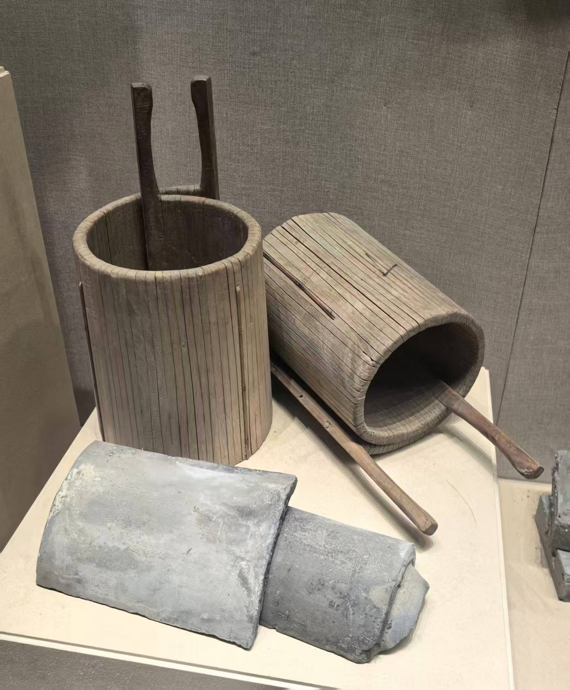
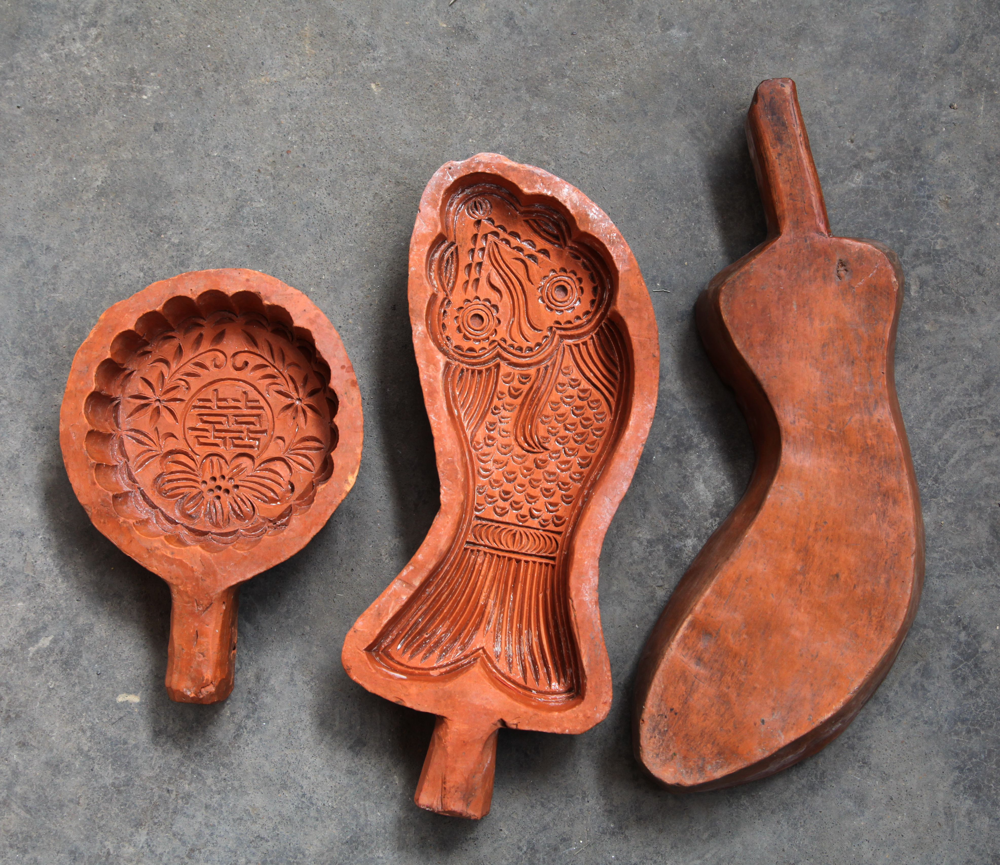
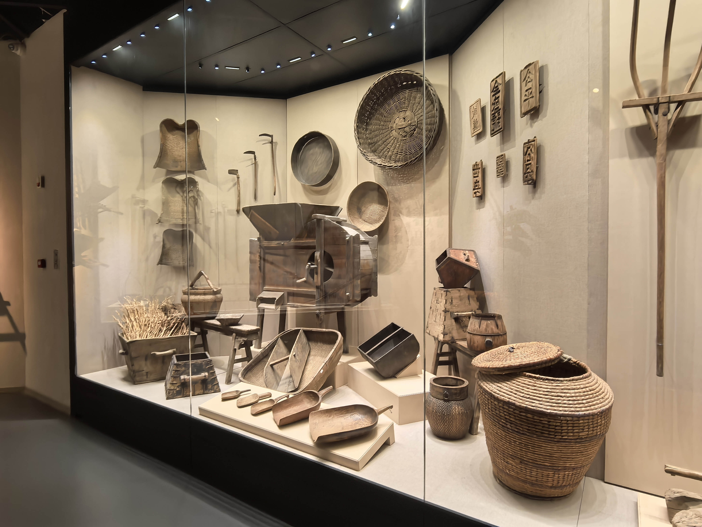

传统工具美学馆
传统工具美学馆是青岛理工大学艺术与设计学院为传承和弘扬中国传统工艺文化而设立的特色展馆。馆内收藏了大量中国传统手工艺工具和民间艺术品，展示了传统工艺的独特魅力和美学价值。
展馆简介
传统工具美学馆始建于2010年，现有藏品500余件，涵盖木工工具、陶艺工具、绘画工具、纺织工具等多个类别。展馆致力于保护和展示传统手工艺工具，为师生提供丰富的传统文化研究资源，同时也面向社会开放，传播中华优秀传统文化。
馆藏精品





展览活动
传统工具美学馆定期举办各类专题展览和文化活动，包括：
- 传统工艺体验课：邀请非遗传承人现场教学，体验传统手工艺制作
- 专题展览：定期举办主题展览，深入展示某一类传统工艺
- 学术讲座：邀请专家学者开展传统文化讲座
- 文化交流：与国内外文化机构开展交流合作
参观信息
- 开放时间：周一至周五 9:00-17:00
- 参观方式：团体参观需提前预约，个人参观可直接前往
- 联系电话：0532-85071066